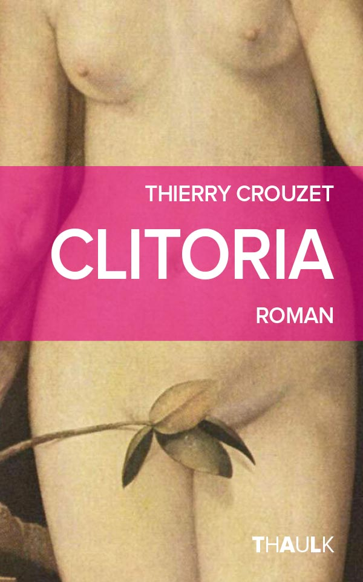
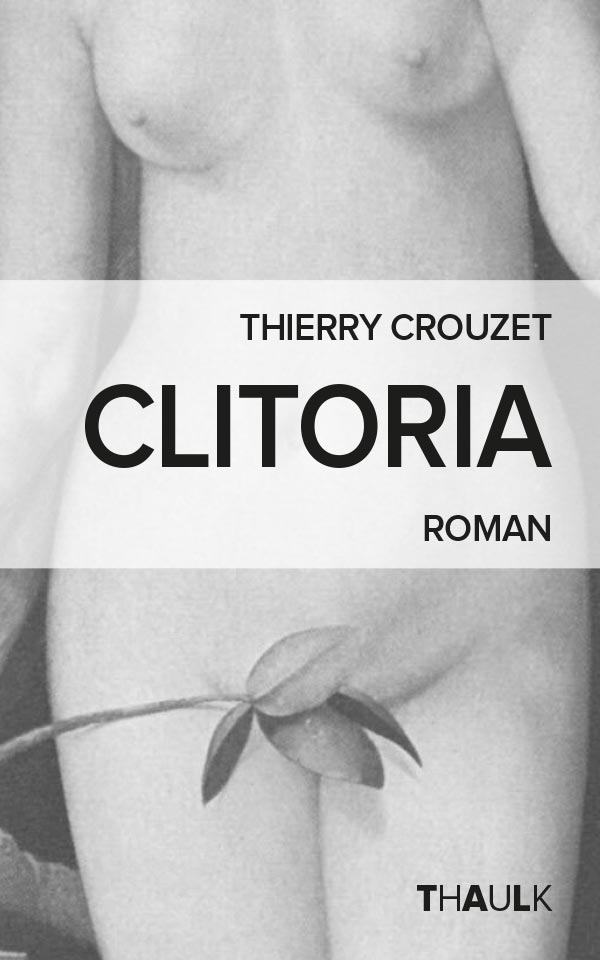
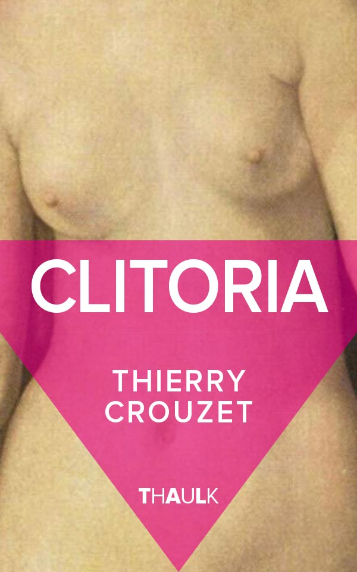

Clitoria, quelques couvertures
Maintenant que le titre de mon petit roman historique libertin est arrêté, me reste à choisir une couverture (toujours en me fiant à vos remarques). J’aime bien les variations en noir et blanc, je me dis que je pourrais utiliser cette charte pour mes autopublications.
Clitoria 1
Clitoria 2
Clitoria 2 bis

Clitoria 3

Clitoria 4

Clitoria 5
Clitoria 6
Clitoria 7

Clitoria 8
Suite | 2014 | Sommaire | Texte publié samedi 25 octobre 2014